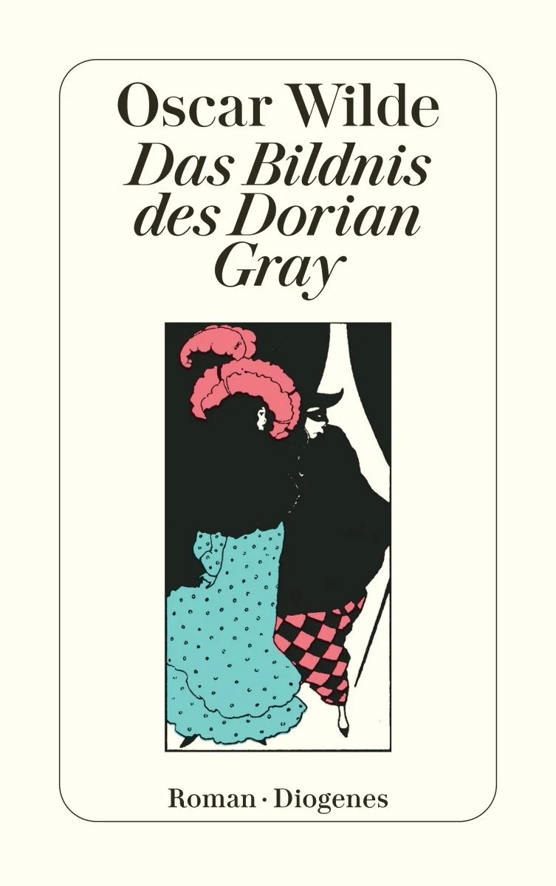
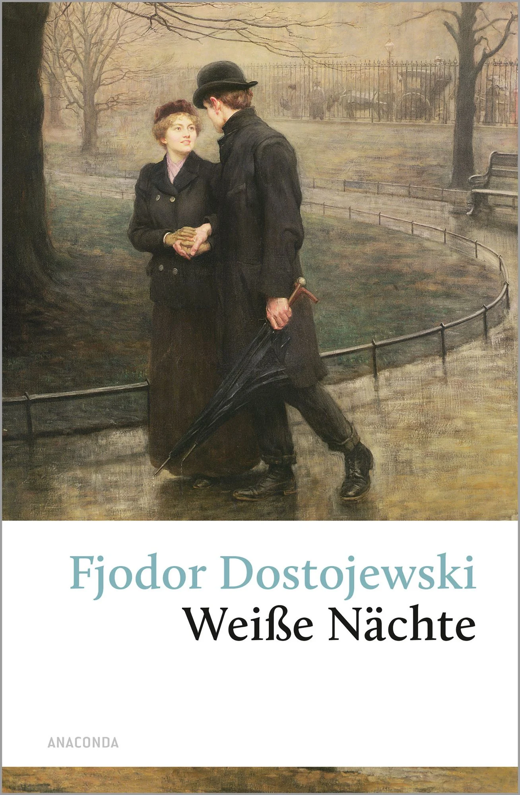
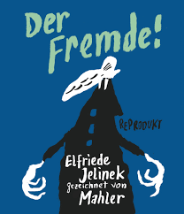

FAVORITE BOOKS
Grid Systems
1984
Dorian Gray

Weiße Nächte

Der Fremde

Klicke auf ein Buch
Hier erscheint die Beschreibung des ausgewählten Buches.
Buch lesen / herunterladen ➔
Klicke auf ein Buch
Hier erscheint die Beschreibung des ausgewählten Buches.
Buch lesen / herunterladen ➔